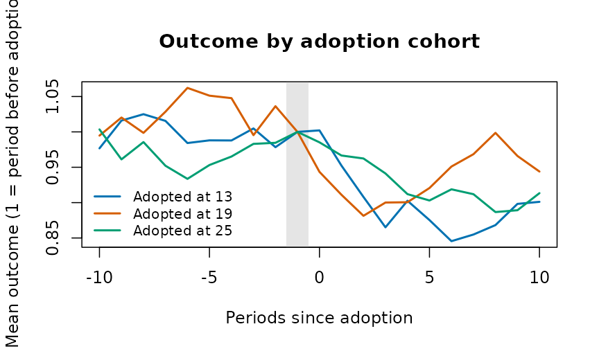
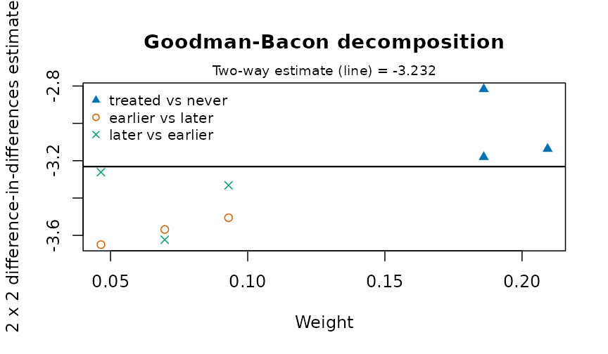
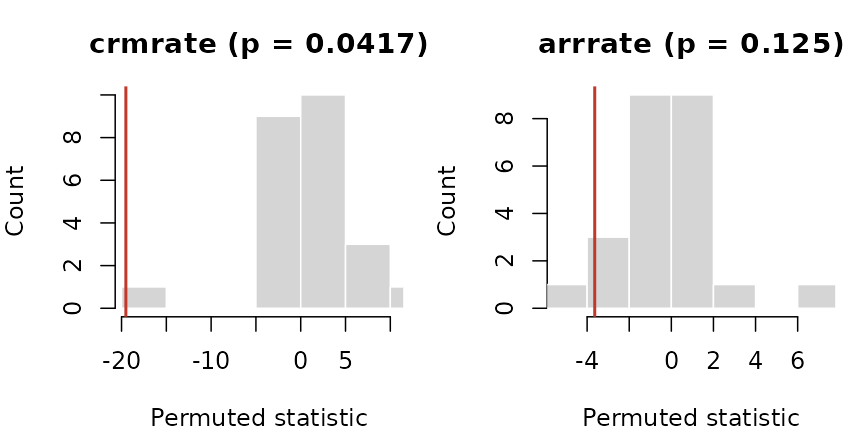
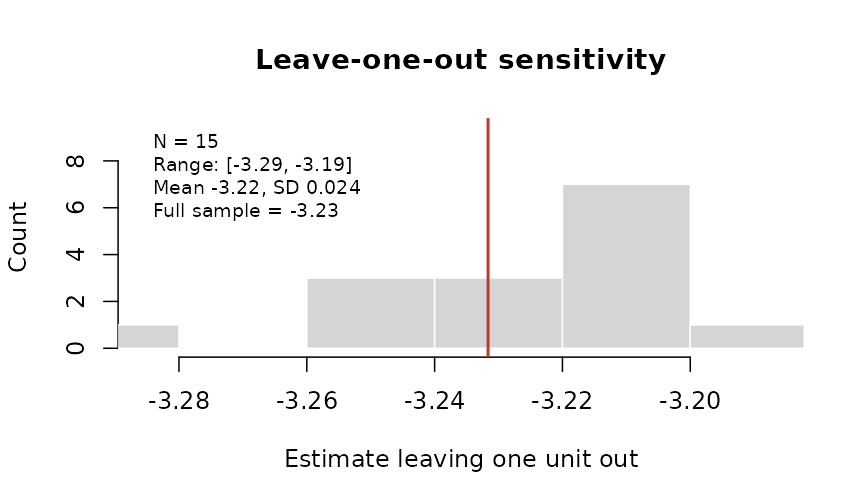
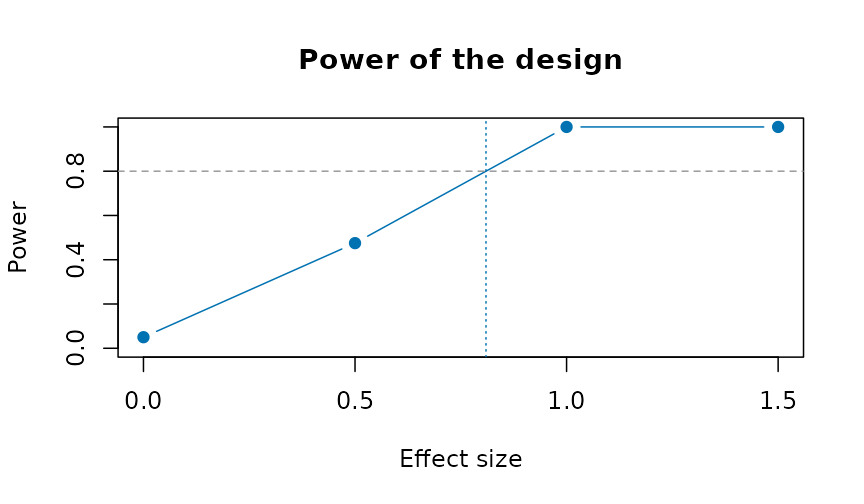

Evaluating a policy from administrative panels
Source:vignettes/policy-evaluation.Rmd
policy-evaluation.RmdA reform reaches some places before others: a new criminal procedure
rolled out district by district, a policing program adopted city by
city, a ward boundary redrawn. Agencies publish the outcomes as counts
or rates by place and period. This vignette covers the designs that turn
such a table into an estimate of the reform’s effect, with honest
uncertainty. Each estimator gives the same answer as the reference
implementation (fixest, did,
bacondecomp) to rounding error, and none of them needs a
package outside base R.
The examples use polex(): twenty districts in four
regions over 36 months, with a reform that reaches the regions in three
stages (months 13, 19 and 25) and never reaches the fourth. The numbers
are made up, with a known effect: the reform lowers the crime rate by
3.
p <- polex()
head(p)
#> district region month refmonth reformed population logpop crimes crmrate
#> 1 D01 R1 1 13 0 152152 11.93264 80 39.732
#> 2 D01 R1 2 13 0 152152 11.93264 56 42.708
#> 3 D01 R1 3 13 0 152152 11.93264 68 41.228
#> 4 D01 R1 4 13 0 152152 11.93264 68 43.296
#> 5 D01 R1 5 13 0 152152 11.93264 62 42.036
#> 6 D01 R1 6 13 0 152152 11.93264 59 40.197
#> arrrate
#> 1 15.394
#> 2 16.387
#> 3 16.043
#> 4 17.148
#> 5 15.443
#> 6 15.568Difference in differences
plndid() fits the two-way fixed-effects regression, with
standard errors clustered by unit (or any coarser grouping), and reports
the effect relative to the comparison units’ mean before the reform:
plndid(p, "district", "month", "crmrate", "reformed")
#> Difference in differences: 720 observations, 20 clusters
#> term estimate se lower upper t p_value
#> treated -3.232 0.1164 -3.475 -2.988 -27.76 7.66e-17
#> Effect relative to the comparison units' pre-period mean (26.52): -12.2%Before any model
cohtrnd() shows each adoption cohort’s outcome around
its adoption, scaled to 1 just before it:

Leads and lags
evstudy() estimates the effect period by period around
adoption. The leads (periods before adoption) should be near zero; the
joint test of that is printed below the table:
es <- evstudy(p, "district", "month", "crmrate", "refmonth", leads = 4, lags = 6)
es
#> Event study: 720 observations, 20 clusters
#> evtm estimate se lower upper t p_value
#> -4 0.07546 0.3433 -0.6431 0.794 0.2198 8.284e-01
#> -3 -0.31658 0.6646 -1.7076 1.074 -0.4763 6.393e-01
#> -2 0.41249 0.4327 -0.4931 1.318 0.9534 3.524e-01
#> -1 0.00000 0.0000 0.0000 0.000 NA NA
#> 0 -3.20456 0.4630 -4.1737 -2.235 -6.9207 1.344e-06
#> 1 -3.16882 0.4427 -4.0954 -2.242 -7.1580 8.390e-07
#> 2 -3.44256 0.5254 -4.5422 -2.343 -6.5522 2.836e-06
#> 3 -3.22263 0.5659 -4.4070 -2.038 -5.6951 1.725e-05
#> 4 -3.17395 0.3626 -3.9328 -2.415 -8.7537 4.291e-08
#> 5 -2.93264 0.3955 -3.7603 -2.105 -7.4158 5.072e-07
#> 6 -3.13434 0.4182 -4.0097 -2.259 -7.4940 4.362e-07
#> Leads jointly zero: F(3, 19) = 1.263, p = 0.3152
plot(es)
Staggered adoption
When districts adopt at different times, the two-way estimate uses
districts already treated as controls for later ones.
bacondcmp() shows how much weight those comparisons
get:
b <- bacondcmp(p, "district", "month", "crmrate", "reformed")
tapply(b$weight, b$type, sum)
#> earlier vs later later vs earlier treated vs never
#> 0.2093023 0.2093023 0.5813953
plot(b)
stgatt() avoids them: each cohort is compared only with
districts not yet treated (Callaway and Sant’Anna), or the regression
has a coefficient for every cohort and period (Wooldridge). The
bootstrap resamples whole districts:
s <- stgatt(p, "district", "month", "crmrate", "refmonth", reps = 99, seed = 1)
s$overall
#> estimate se lower upper
#> 1 -2.825844 0.3400471 -3.492324 -2.159364
plot(s)
For a treatment that can switch off as well as on,
swtdid() compares the units that switch with those that do
not, in the period they switch, with a placebo one period earlier:
swtdid(p, "district", "month", "crmrate", "reformed", reps = 99, seed = 1)
#> term estimate se lower upper switchers
#> 1 effect -3.1355000 0.4555572 -4.028376 -2.2426243 15
#> 2 placebo -0.5169222 0.4429911 -1.385169 0.3513245 15Inference from the assignment
With four regions there are only 24 ways to assign the three stages
and the never-treated region. perminf() tries every one,
and gives the share at least as extreme as the real assignment. With two
outcomes it also gives Westfall and Young’s stepdown p-values, which
hold the chance of any false positive at the nominal level:
r <- perminf(p, "district", "month", c("crmrate", "arrrate"), "refmonth",
cl = "region")
r
#> outcome estimate statistic p_value pstpdn assignments exact
#> 1 crmrate -3.2316395 -19.516735 0.04166667 0.04166667 24 TRUE
#> 2 arrrate -0.2136969 -3.638159 0.12500000 0.12500000 24 TRUE
plot(r, type = "histogram")
loounit() checks that no single district drives the
estimate:

Several outcomes at once, in the style of a Stata event-study figure:
plotevgrid(list(
"Crime rate" = es,
"Arrest rate" = evstudy(p, "district", "month", "arrrate", "refmonth", leads = 4,
lags = 6)), style = "stata")
Counts
For counts, plnpois() gives the effect as a rate ratio,
with the population as exposure:
plnpois(p, "district", "month", "crimes", "reformed", offset = "logpop")
#> term estimate se rateratio lower upper p_value
#> 1 treated -0.092146 0.02220761 0.911972 0.8731289 0.9525431 3.334947e-05One treated place
synctl() builds a weighted average of untreated places
that tracks the treated one before the reform, and runs the same method
on each untreated place as a placebo:
p13 <- p[is.na(p$refmonth) | p$district == "D13", ]
sc <- synctl(p13, "district", "month", "crmrate", "D13", adopt = 13)
sc
#> Synthetic control for D13, adoption at 13
#> Donor weights: D12 0.408, D04 0.376, D20 0.185, D16 0.031
#> Pre-period RMSPE 0.7638; mean gap after adoption -3.107; post/pre RMSPE ratio 4.33
#> Placebo-in-space p = 0.167 (5 placebos)
plot(sc)
Measures for justice data
Three measures prepare the outcomes these designs take:
-
sevidx()combines offence rates, weighted by each offence’s severity (for example its mean statutory sentence); -
piperate()gives the rate at which one stage of the justice process follows another, with the input’s window set before the outcome’s, because cases take time; -
cmlrisk()gives the chance of a first arrest (or conviction, or placement) by each age, from first events and the population.
For place-based designs, bufasgn() marks places near a
site as treated, places near a comparison point and far from every site
as the comparison, and excludes the rest.
d <- data.frame(city = rep(c("A", "B"), each = 3), year = 2024,
offence = rep(c("homicide", "robbery", "burglary"), 2),
n = c(5, 120, 300, 2, 90, 410), pop = rep(c(250000, 180000), each = 3))
sevidx(d, "city", "year", "offence", "n",
w = c(homicide = 25, robbery = 8, burglary = 4), pop = "pop")
#> unit time unweighted weighted
#> 1 A 2024 170.0000 914.000
#> 2 B 2024 278.8889 1338.889
cmlrisk(16:20, c(900, 1400, 1700, 1600, 1400), rep(1e5, 5))
#> age hazard atrisk cumrisk lower upper
#> 1 16 0.00900000 100000 0.009 0.00841449 0.009585164
#> 2 17 0.01412714 99100 0.023 0.02207046 0.023928652
#> 3 18 0.01740020 97700 0.040 0.03878469 0.041213777
#> 4 19 0.01666667 96000 0.056 0.05457388 0.057423968
#> 5 20 0.01483051 94400 0.070 0.06841727 0.071580045Doing better than the original designs
Published applications of these designs often share a few weaknesses, and each has a remedy here.
Few clusters. A reform assigned to a handful of
districts gives cluster-robust tests that reject too often.
wcb() gives an honest p-value and interval; with four
clusters it says plainly that nothing can be rejected at 5%:
wcb(p, "district", "month", "crmrate", "reformed", cl = "region")
#> estimate t p_value lower upper clusters draws enumerated
#> 1 -3.23164 -19.51674 0.125 -Inf Inf 4 16 TRUEDoubts about parallel trends. tse()
asks how large a departure from parallel trends, relative to the largest
seen before adoption, would make the effect vanish:
tse(es, seed = 1)
#> Sensitivity of the average post-period effect to departures from parallel trends (relative magnitudes)
#> mbar lowerbnd upbound lower upper
#> 0.0 -3.183 -3.1828 -3.938 -2.4111
#> 0.5 -4.641 -1.7247 -6.987 0.1902
#> 1.0 -6.099 -0.2665 -10.199 3.3527
#> 1.5 -7.557 1.1916 -13.461 6.6212
#> 2.0 -9.015 2.6497 -16.729 9.8277
#> Breakdown: the interval first includes 0 at Mbar = 0.4677591Covariates that differ between groups.
stgatt() with covariates is doubly robust (use
covariates fixed before treatment: one the reform moves, such as
arrests, is a bad control). plndml() lets a machine learner
fit the confounding with fixed effects, and mtchdid()
matches units on their pre-reform paths before differencing:
set.seed(4)
p$x1 <- rnorm(20)[match(p$district, unique(p$district))]
stgatt(p, "district", "month", "crmrate", "refmonth", covs = "x1", reps = 49,
seed = 1)$overall
#> estimate se lower upper
#> 1 -2.459345 0.691214 -3.8141 -1.10459
m <- mtchdid(p, "district", "month", "crmrate", "refmonth", ratio = 2)
m$estimate
#> Difference in differences: 720 observations, 20 clusters
#> term estimate se lower upper t p_value
#> treated -3.081 0.1208 -3.334 -2.829 -25.51 3.672e-16
#> Effect relative to the comparison units' pre-period mean (26.3): -11.7%A single treated place, or a few.
syndid() weights both comparison units and pre-periods:
syndid(p13, "district", "month", "crmrate", "refmonth", reps = 50, seed = 1)
#> Synthetic difference in differences: -2.818 (placebo s.e. 0.5869; -3.969 to -1.668)
#> Unit weights: D12 0.207, D20 0.203, D04 0.201, D16 0.195, D08 0.195Null results without a measure of power.
plnpwr() simulates the design on the untreated data and
gives the minimum detectable effect:
pw <- plnpwr(p[p$month <= 12, ], "district", "month", "crmrate", ntrt = 10,
adopt = 7:10, eff = c(0, 0.5, 1, 1.5), reps = 40, seed = 1)
pw
#> effect power
#> 0.0 0.050
#> 0.5 0.475
#> 1.0 1.000
#> 1.5 1.000
#> Size (rejections with no effect): 0.050 at alpha 0.050
#> Minimum detectable effect at this power: 0.8095
plot(pw)
Indigenous examples
The methods here need a panel: units observed over time, some treated at a known date. The bundled Indigenous tables are repeated cross-sections of published estimates, so the before-and-after comparison they support is the change in a gap, with its interval:
hi <- indiex("health")
x <- hi[hi$age == "Total, 18 years and over" &
hi$indicator == "Perceived mental health, very good or excellent", ]
gaps <- do.call(rbind, lapply(split(x, x$period), function(p) {
cbind(period = p$period[1],
indgap(p, "group", "estimate", "lower", "upper")[
, c("group", "difference", "diflo", "difup")])
}))
rownames(gaps) <- NULL
gaps
#> period group difference diflo difup
#> 1 2015/2018 First Nations -10.8 -13.23311 -8.366895
#> 2 2015/2018 Métis -9.6 -12.03311 -7.166895
#> 3 2015/2018 Inuit -21.5 -27.31378 -15.686223
#> 4 2019/2022 First Nations -15.7 -18.53593 -12.864070
#> 5 2019/2022 Métis -8.7 -11.58531 -5.814692
#> 6 2019/2022 Inuit -13.7 -20.16568 -7.234321Perceived mental health fell for every group between the two cycles; whether the gaps moved is read from the intervals, not the point estimates.
Acknowledgements
These designs are those of the empirical work of Professor Angela Zorro Medina (University of Toronto) on criminal-procedure reform, political dynasties, police stops and the cumulative risk of criminal justice outcomes. The estimators themselves are the standard ones of the literature cited on each help page.
References
- Abadie A, Diamond A, Hainmueller J (2010). Synthetic control methods for comparative case studies. Journal of the American Statistical Association 105(490):493-505.
- Acosta C, Mejia D, Zorro Medina A (2023). On the tension between due process protection and public safety: the case of an extensive procedural reform in Colombia. SSRN 10.2139/ssrn.4585682.
- Callaway B, Sant’Anna PHC (2021). Difference-in-differences with multiple time periods. Journal of Econometrics 225(2):200-230.
- de Chaisemartin C, D’Haultfoeuille X (2020). Two-way fixed effects estimators with heterogeneous treatment effects. American Economic Review 110(9):2964-2996.
- Goodman-Bacon A (2021). Difference-in-differences with variation in treatment timing. Journal of Econometrics 225(2):254-277.
- Hepburn P, Kohler-Hausmann I, Zorro Medina A (2019). Cumulative risks of multiple criminal justice outcomes in New York City. Demography 56(3):1161-1171.
- Ternullo S, Zorro-Medina A, Vargas R (2024). How political dynasties concentrate advantage within cities. Social Forces 102(4):1310-1331.
- Westfall PH, Young SS (1993). Resampling-Based Multiple Testing. Wiley.
- Wooldridge JM (2021). Two-way fixed effects, the two-way Mundlak regression, and difference-in-differences estimators. SSRN 10.2139/ssrn.3906345.
- Zorro Medina A, Hackett D, Green D, Vargas R (2025). Evidence of donor bias in Chicago police stops. arXiv:2504.15140.